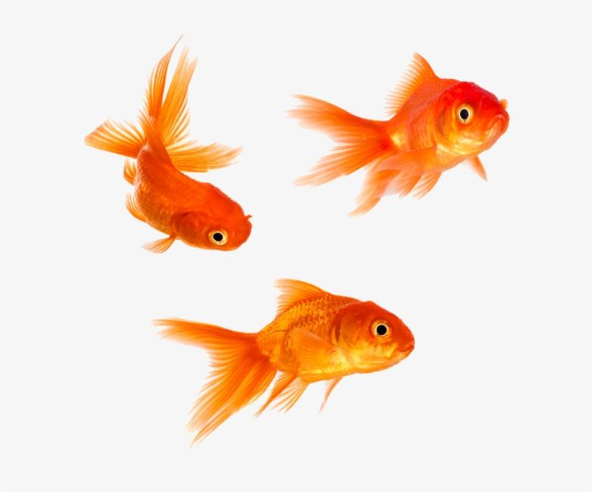

Onions, Garlic, & Chives can break down a cat’s red blood cells, which can cause weakness, shortness of breath and anemia.
Wine, beer, liquor and food that contains alcohol can result in diarrhea, vomiting, breathing problems, tremors and other serious conditions.
Chocolate. Theobromine and caffeine are two types of methylxanthines that can be very toxic to cats. Which will cause diarrhea, vomiting, weakness, rapid breathing, and elevated temperature.
Chocolate contains a very toxic substance called methylxanthines, which are stimulants that can stop a dog’s metabolic process.
Avocados. Every part of the fruit has a strain of fatty acid called persin, which is toxic to your pup in large quantities.
Onions and Garlic. It cause anemia in your dog by killing its red blood cells. Even a little bit can be detrimental to its health.
Grapes and Raisins. Eating this whether it’s the fresh or dried form, it can cause kidney failure.
Milk and other Dairy Products. Milk from any other type of dairy (cow, goat, etc.) could make them sick. There are sugars and fatty acids that dogs don’t have the enzymes to digest properly.
Beef, pork, or even chicken scraps, can cause fat buildup around your fish's heart.
More than 3% fat can be harmful to the liver and reproductive organs of your herbivore.
If your fish is a carnivore, it can consume up to a 6% concentration of fat.
